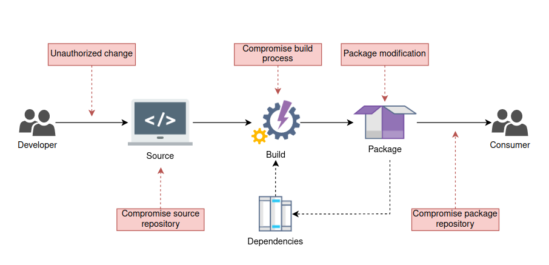

Overview
Secure Tech-project studies secure technologies in the context of embedded virtualization. This documentation-project, named after Ghaf tree, provides a landing site to our work. Our applied software research supports Secure Systems Research Center focus areas.
Embedded Virtualization
Embedded virtualization builds on cloud technologies in the development of end-to-end security. With hardware support for virtualization, we provide hardened system of small trusted computing base (TCB) - thin host - that enables isolation of use cases and their resources. Use cases are protected in guest virtual machines. Embedded targets small devices - personal or headless - instead of high performance cloud servers. Our scope is illustrated in the following diagram.

Reference Implementation
//Our work in progress reference implementation on NXP i.MX8 is available here.
Architecture
The main architectural concept of the Ghaf platform is to break up the traditional monolithic structure to modularized components, virtual machines (VM). These VMs on hardened host OS implement the Ghaf edge virtualization platform. The Ghaf platform components are used in reference configurations to build images for reference devices. See build configurations for more info.
See architectural decisions record for more info on design choices that address architectural requirements.
Architecture Decision Record
Overview
Architecture decision records (ADR) are used to constitute the Ghaf platform decision log.
Contributions
Contributions to Ghaf architecture decisions are welcome. Please create an architectural decision proposal by opening a pull request using the template to build configurations.
Technologies
Overview
Embedded virtualization builds on technologies from cloud security. Cloud services provide scalable but isolated computation - your business case is isolated from someone else's business case. At hardware level. Similarly, hardware support in modern personal devices has enabled isolation of device resources with virtualization. This provides the baseline for secure system design for use case protection. In practice, user can use the same device with a trusted application and with an untrusted application. Both application isolated from each other to protect valuable user data and privacy. Our systems are built using nixpkgs and various Nix based tools and configurations.
Hardware Requirements for Virtualization
Protected computation resources include: CPU, memory, storage and other IO devices. Allocation of these resources is managed with hypervisor. In our reference implementation, we use KVM (Kernel Virtual Machine) from Linux to virtualize hardware access. From hardware, this requires MMU (memory management unit) for CPU physical to virtual address mapping and IOMMU for direct memory access (DMA) capable device virtual addresses to physical addresses of the main memory. Many 64-bit CPUs support virtualization via hypervisor extensions already. Our reference implementation supports x86_64 and aarch64 and we follow RISC-V hypervisor extensions development.
Our current reference hardware is NXP iMX8 QM development board. In addition, x86_64 hardware is supported via Spectrum OS upstream.
Virtual Machine Manager (VMM)
On top of operating system (OS) kernel hypervisor support with KVM - we allocate virtual resources for use cases with user space virtual machine manager (VMM) using rust-vmm based projects such as cloud-hypervisor and crosvm. QEMU is enabled for certain development use cases. In addition, we have also experimental, aarch64 demonstrated support for a KVM variant - KVMS which adds security features to standard KVM.
Build Configurations
Our hardened operating system (OS) targets are build configurations based on NixOS. The canonical URL for the upstream git repository is: https://github.com/NixOS.
Build configurations define our dependencies and configuration changes to packages and build mechanisms of NixOS. If you want to try and check the details, see build-configurations repository.
Approach
A build configuration is a target to build our hardened OS for a particular hardware device. The supported development target devices are listed in the build-configurations. The packages used in a build configuration comes from nixpkgs - NixOS Packages collection. Upstream first approach means we aim the fix issues by contributing to nixpkgs. At the same time we get the maintenance support of NixOS community and the benefits of Nix language on how to build packages and track the origins of packages in software supply chain security.
NixOS, a Linux os distribution packaged with Nix, provides us with:
- generic hardware architecture support (
x86_64andaarch64) - declarative and modular mechanism to describe the system
- Nix packaging language mechanisms
Even when unmodified upstream are often preferred, even ideal, to ensure timely security updates from upstream - the customizations are sometimes required.
For example, to support a reference board without vendor board support package (BSP) - bootloader, kernel, device drivers - is often not feasible. With this approach we can overlay generic NixOS linux kernel with the vendor kernel and add vendor bootloader to build a target image. Often the vendor BSPs are also open source but sometimes contain unfree binary blobs from the HW vendor. Those are handled by allowing unfree - if user agrees with the end-user license agreement (EULA). If not, unfree support can be dropped along with that part of the BSP support. Same goes with the architectural variants - headless devices or end-user devices - differ in terms what kind of virtual machines (VM) they contain. User needs graphics architecture and supporting VMs for the user interface (UI) where a headless device is more like a small server without the UI.
Supply Chain Security
To be aware of what is exactly in our software supply chain, it is reviewed for security issues and known vulnerabilities.

We implement a supply chain security (SCS) — process of securing the machinery of the development, building and release environment. That means that every component that a software artifact might be touching on its way from the developer to the consumer will be secured.
The software artifact should be encrypted on each possible transition phase and its integrity should be verified at each destination. Each build should be accompanied by means of software bill of materials (SBOM), identifying all the components that the software package consists of.
SBOM containing reference to each dependency, its source and version together with provenance, containing build information are collected at the build time, signed and used for vulnerability analysis during the next steps.
The software artifact, SBOM and provenance are signed by the build machinery at the build time, and the signature is verifiable at every destination of the package. The certificates that are used for signing and verification are provided by the public key infrastructure (PKI) system and are signed by the same root certificate authority (CA). It allows easily confirm the signature author (build machinery) and guarantee that the package has not been tampered with since the build time.
SLSA Framework
Supply chain Levels for Software Artifacts (SLSA) is a security framework for tampering prevention, integrity improvement and securing packages and infrastructure of a project. More information about SLSA framework can be found from SLSA official SLSA website.
SLSA Terminology
Immutable reference: An identifier, guaranteed to always point to the same, immutable artifact.
Provenance: Metadata about how an artifact was produced.
Revision: An immutable, coherent state of a source.
Levels of Assurance
One of the requirements for the solution is to reach SLSA Level 4 and even go beyond that. This requires a lot of process changes as well as technical work.
The SLSA model consists of 4 levels, offering an incremental level of anti-tampering protection. Levels 1-3 represent milestones with certain integrity guarantees, whereas level 4 is an ideal end state.
Level 0 means no SLSA compliance and no guarantees are given.
Level 1 demands a fully scripted/automated build process and provenance generation. It offers basic confidence in the origin of the software but doesn’t provide any tamper resistance.
Level 2 Introduces authenticated provenance generated by a hosted build at the same time demanding version control system usage. Provenance prevents tampering and offers trust in the build service.
Level 3 offers auditability of the source and the integrity of the provenance. Much stronger tampering protection is provided by preventing specific classes of threats such as cross-build contamination.
Level 4 requires two-peer source code review and a hermetic, reproducible build process. Overall Level 4 offers a high degree of confidence in the anti-tampering protection of the software.
SLSA level is not transitive, thus level of the artifact is not dependent on the level of dependencies, which are expected to have their own SLSA levels. This makes it possible to build a Level 4 artifact from Level 0 dependencies.
Requirements
| Requirements | Level 1 | Level 2 | Level 3 | Level 4 |
|---|---|---|---|---|
| Source — Version controlled | ✓ | ✓ | ✓ | |
| Source — Verified history | ✓ | ✓ | ||
| Source — Retained indefinitely | ✓ | ✓ | ||
| Source — Two-person reviewed | ✓ | |||
| Build — Scripted build | ✓ | ✓ | ✓ | ✓ |
| Build — Build service | ✓ | ✓ | ✓ | |
| Build — Build as code | ✓ | ✓ | ||
| Build — Ephemeral environment | ✓ | ✓ | ||
| Build — Isolated | ✓ | ✓ | ||
| Build — Parameterless | ✓ | |||
| Build — Hermetic | ✓ | |||
| Build — Reproducible | ○ | |||
| Provenance — Available | ✓ | ✓ | ✓ | ✓ |
| Provenance — Authenticated | ✓ | ✓ | ✓ | |
| Provenance — Service generated | ✓ | ✓ | ✓ | |
| Provenance — Non-falsifiable | ✓ | ✓ | ||
| Provenance — Dependencies complete | ✓ | |||
| Common — Security | ✓ | |||
| Common — Access | ✓ | |||
| Common — Superusers | ✓ |
✓ — Required
○ — Required unless justified otherwise
Empty cell — not required
Basic Security Measures
Source Code / Version Control Security
The source code security is based on the fact that the source code is two-person reviewed, version controlled, and the history is verified and retained indefinitely.
Commit Signing
All the commits to repositories must be GPG-signed. This can be achieved by enabling GPG commit signatures in the config:
git config --global commit.gpgsign true
More detailed information for GitHub is available on: Signing Commits on GitHub
Branch Protection
In the case of GitHub the following settings should be considered:
- Require pull request reviews before merging (req: two-person reviewed source)
- Require status checks before merging
- Require conversation resolution before merging
- Require signed commits ()
- Deletions should be forbidden (req: immutable history)
Software Signing
Software signing is an important measure to validate the author and ensure that the code has not been altered on the way from the developer to the customer. Nix tooling is offering means to sign the derivations using libsodium with EdDSA, however, as the modular system is assumed, scripts need to be developed to support signing mechanisms in an absence of Nix tooling.
By default, the software image is signed only at the binary cache per request. Which leaves the path from Hydra to the binary cache unsecured. The problem can be resolved in two ways:
- Enabling the image signing on Hydra
- Shared Nix Store
The second option is rather straightforward. Enabling the image signing on Hydra requires some extra work due to the lack of support of image signing at Hydra at the time of writing this document. As already mentioned, NixOS is using libsodium-based EdDSA solution for image signing. So similar scripts can be implemented. For example, in Python by using existing libsodium bindings, such as PyNaCl.
Data Encryption in Transit
All the data should be transported over secure encrypted channels. Since all the transportation is done over TCP/IP protocol stack, it is possible to use native solutions like TLS to secure the traffic between the nodes. Version 1.2 is a minimum requirement.
Public Key Infrastructure
In the SCS context a public key infrastructure (PKI) term refers to a system for the creation, storage, and distribution of digital certificates which are used to verify that a particular key belongs to a certain entity. PKI creates and manages a hierarchical set of digital certificates which map public keys to certain entities. Storage and revocation methodologies are to be defined.
The PKI of SCS should consist of:
- Certificate authority (CA) for storing, issuing, and signing the digital certificates
- Registration authority (RA) for requesting entity identity verification
- Central directory for the secure storage of the keys
- Certificate Management System (CMS) for managing access to stored certificates
Private Certificate Authority (PCA)
PCA enables the creation of private certificate authority hierarchies, consisting of a Root and Subordinate CAs. It issues end-entity X.509 certificates, that are used for:
- Encrypted TLS communication channels (data encryption in transit)
- Code and image signing
PCA can be established in the cloud or on-premises. Initially, the OpenSSL based solution deployed on-premises is assumed, however, some of the target projects might consider using commercial cloud solutions.
Hardware Security Module
On-premises solution can be further improved by adding a Hardware Security Module (HSM). It is a physical device for managing cryptographic material such as digital keys.
HSM can be also used to perform cryptographic operations such as digital signing, encryption, and decryption. The HSM contains one or more Secure Cryptoprocessor that are dedicated microprocessors optimized for carrying out cryptographic operations.
One example of affordable HSM solutions is YubiHSM, developed by Yubico.
CA Hierarchy Options
CA usually consists of:
- Root CA - the root of trust of the entire PKI, for issuing and signing the certificates used by other CAs
- Subordinate CA for issuing end-entity certificates
There are three types of hierarchies: one-tier, two-tier and three-tier. The hierarchy can be chosen based on the target project's needs and complexity. A one-tier hierarchy is not considered for any production usage due to the low security, as the compromise of a single CA leads to a compromise of the entire PKI.
In a two-tier hierarchy the Root CA and issuing (Subordinate) CAs are separated for increasing the security level. This is the simplest production level hierarchy allowing to keep Root CA at the most secure and restrictive levels, yet making subordinate CA access slightly more permissive. This hierarchy is most likely sufficient for most of the target projects.
In a three-tier CA an intermediate CA is placed between the Root CA and the Subordinate (issuing) CA. This is done to further separate the Root CA from low-level CA operations. The middle layer (intermediate CA) is only used to sign Subordinate CAs that issue the end-entity certificates.